clc
clear
close all
addpath(genpath('Functions'))
d = dir('C:\\Users\Jake\Documents\Data\HorslenData');
file = load([d(5).folder filesep d(5).name]);
data = file.procdata;
fyupper = [0.0011 2.0 .10 0.1 1000 50 1 0 0];
fylower = [0.0011 2.0 .09 0.0 10 10 -1 0 -.01];
fyinit = fylower;
fyparameters = [fyinit; fylower; fyupper];
FYfit = getFYgains(data, fyparameters, 'Blum');
FYfit
lvaupper = [1000 500 100 5 10 100 0];
lvalower = [1 1 1 -1 -1 -10 -.02];
lvainit = lvalower;
lvaparameters = [lvainit; lvalower; lvaupper];
LVAMfit = getLVAgains(data, lvaparameters, 'MTU');
LVAMfit
LVAFfit = getLVAgains(data, lvaparameters, 'Fas');
LVAFfit
FYfit =
struct with fields:
F: [29018×1 double]
Y: [29018×1 double]
L: [29018×1 double]
V: [29018×1 double]
A: 0.0011
k_exp: 2
L0: 0.1000
k_lin: 4.1781e-12
kF: 422.4109
kY: 50.0000
bF: -0.2490
bY: 0
lambda: -0.0100
Fnc: [29018×1 double]
Ync: [29018×1 double]
Fc: [29018×1 double]
Yc: [29018×1 double]
Focclusion: [29018×1 double]
Yocclusion: [29018×1 double]
Fcomp: [29018×1 double]
Ycomp: [29018×1 double]
predictor: [29018×1 double]
R: 0.8437
R2: 0.7118
resid: [343×1 double]
R2adj: 0.7049
VAF: 0.6327
LVAMfit =
struct with fields:
L: [29018×1 double]
V: [29018×1 double]
A: [29018×1 double]
kL: 20.1371
kV: 11.3461
kA: 1.0000
bL: 1.9510
bV: 2.7982
bA: -10.0000
lambda: -0.0200
Locclusion: [29018×1 double]
Vocclusion: [29018×1 double]
Aocclusion: [29018×1 double]
Lcomp: [29018×1 double]
Vcomp: [29018×1 double]
Acomp: [29018×1 double]
predictor: [29018×1 double]
R: 0.8380
R2: 0.7023
resid: [343×1 double]
R2adj: 0.6961
VAF: 0.7022
LVAFfit =
struct with fields:
L: [29018×1 double]
V: [29018×1 double]
A: [29018×1 double]
kL: 693.4994
kV: 378.8811
kA: 33.3721
bL: -0.5175
bV: 0.0763
bA: -5.1491
lambda: -6.8033e-04
Locclusion: [29018×1 double]
Vocclusion: [29018×1 double]
Aocclusion: [29018×1 double]
Lcomp: [29018×1 double]
Vcomp: [29018×1 double]
Acomp: [29018×1 double]
predictor: [29018×1 double]
R: 0.8689
R2: 0.7550
resid: [343×1 double]
R2adj: 0.7499
VAF: 0.7510
for ii = 3:5
clear fit
file = load([d(ii).folder filesep d(ii).name]);
data = file.procdata;
swayLmt = data.Lmt(data.time < 0);
swayAmp = mean(sqrt(swayLmt.^2));
fyupper = [FYfit.A FYfit.k_exp FYfit.L0 FYfit.k_lin FYfit.kF FYfit.kY FYfit.bF FYfit.bY FYfit.lambda];
fylower = [FYfit.A FYfit.k_exp FYfit.L0 FYfit.k_lin FYfit.kF FYfit.kY FYfit.bF FYfit.bY FYfit.lambda];
fyinit = fylower;
fyparameters = [fyinit; fylower; fyupper];
modfyfit = getFYgains(data, fyparameters, 'Blum');
plotFY(data, modfyfit, -30)
sgtitle(['RMS sway amp.: ' num2str(swayAmp)])
print(['C:\\Users\Jake\Documents\Data\HorslenData\FY', d(ii).name, 'sway.eps'], '-depsc','-painters')
plotFY(data, modfyfit, -1)
sgtitle(['RMS sway amp.: ' num2str(swayAmp)])
print(['C:\\Users\Jake\Documents\Data\HorslenData\FY', d(ii).name, 'ramp.eps'], '-depsc','-painters')
lvamupper = [LVAMfit.kL LVAMfit.kV LVAMfit.kA LVAMfit.bL LVAMfit.bV LVAMfit.bA LVAMfit.lambda];
lvamlower = [LVAMfit.kL LVAMfit.kV LVAMfit.kA LVAMfit.bL LVAMfit.bV LVAMfit.bA LVAMfit.lambda];
lvaminit = lvamlower;
lvamparameters = [lvaminit; lvamlower; lvamupper];
modlvamfit = getLVAgains(data, lvamparameters, 'MTU');
plotLVA(data, modlvamfit, -30)
print(['C:\\Users\Jake\Documents\Data\HorslenData\LVAM', d(ii).name, 'sway.eps'], '-depsc','-painters')
plotLVA(data, modlvamfit, -1)
print(['C:\\Users\Jake\Documents\Data\HorslenData\LVAM', d(ii).name, 'ramp.eps'], '-depsc','-painters')
lvafupper = [LVAFfit.kL LVAFfit.kV LVAFfit.kA LVAFfit.bL LVAFfit.bV LVAFfit.bA LVAFfit.lambda];
lvaflower = [LVAFfit.kL LVAFfit.kV LVAFfit.kA LVAFfit.bL LVAFfit.bV LVAFfit.bA LVAFfit.lambda];
lvafinit = lvaflower;
lvafparameters = [lvafinit; lvaflower; lvafupper];
modlvaffit = getLVAgains(data, lvafparameters, 'Fas');
plotLVA(data, modlvaffit, -30)
print(['C:\\Users\Jake\Documents\Data\HorslenData\LVAF', d(ii).name, 'sway.eps'], '-depsc','-painters')
plotLVA(data, modlvaffit, -1)
print(['C:\\Users\Jake\Documents\Data\HorslenData\LVAF', d(ii).name, 'ramp.eps'], '-depsc','-painters')
end
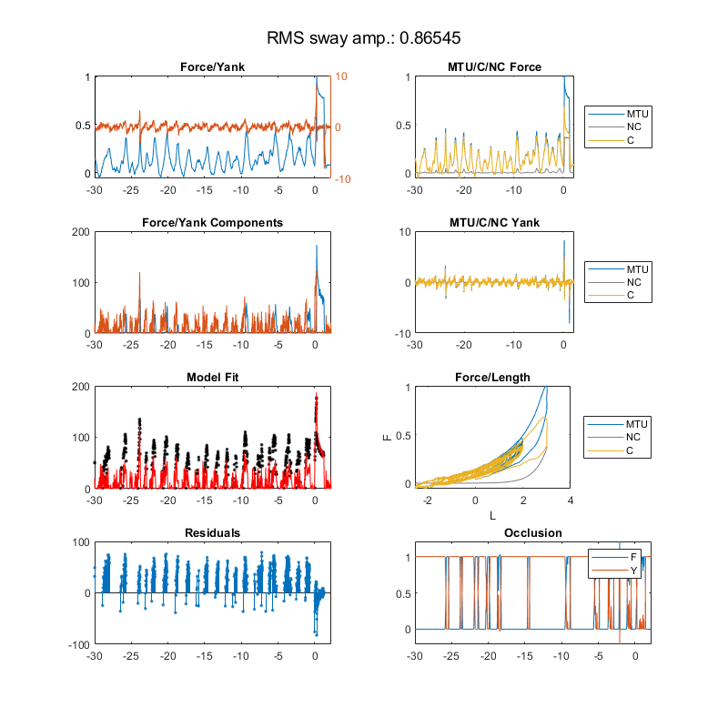 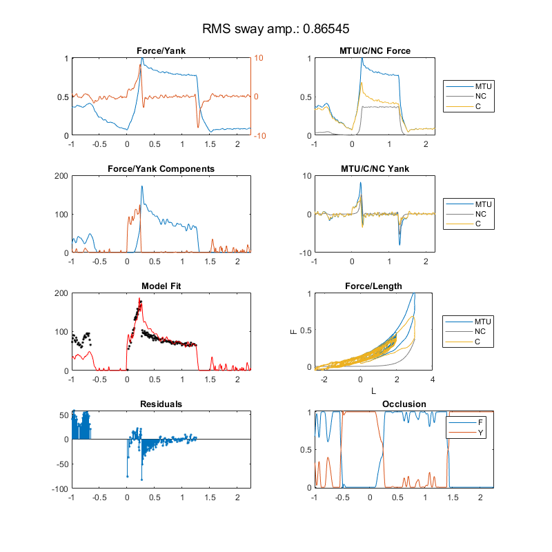 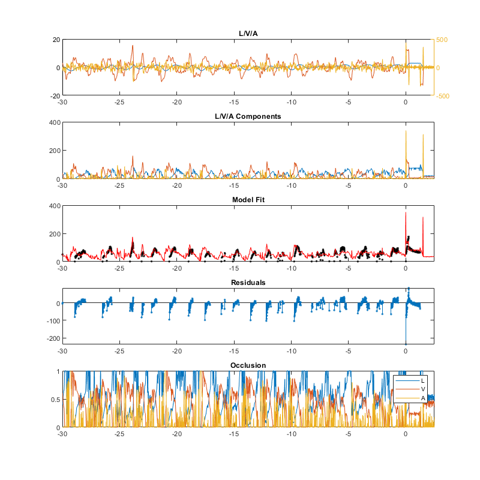 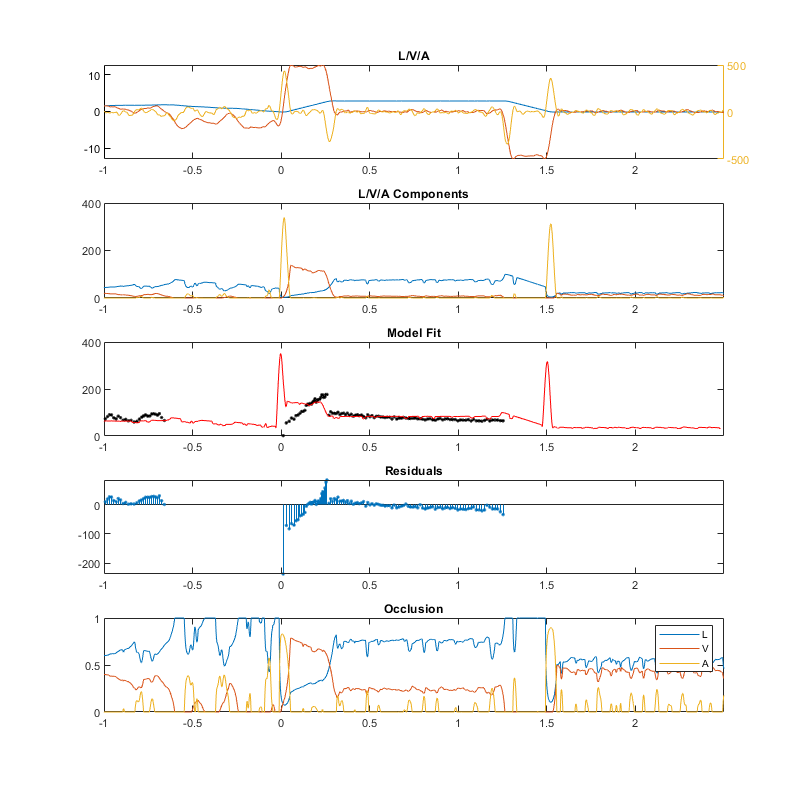 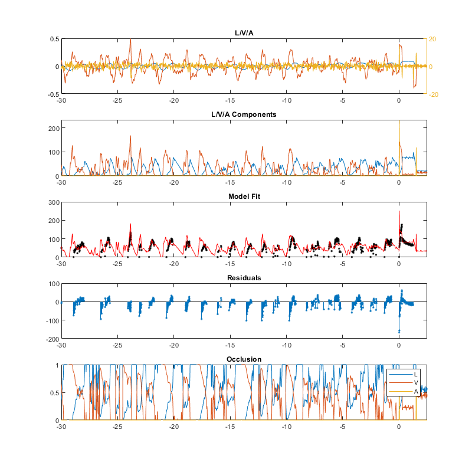 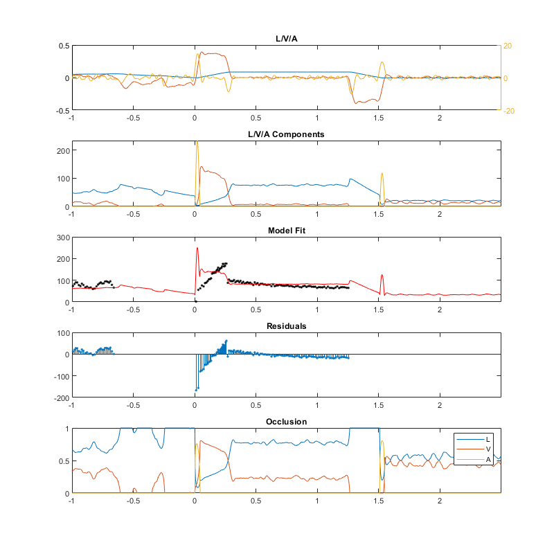 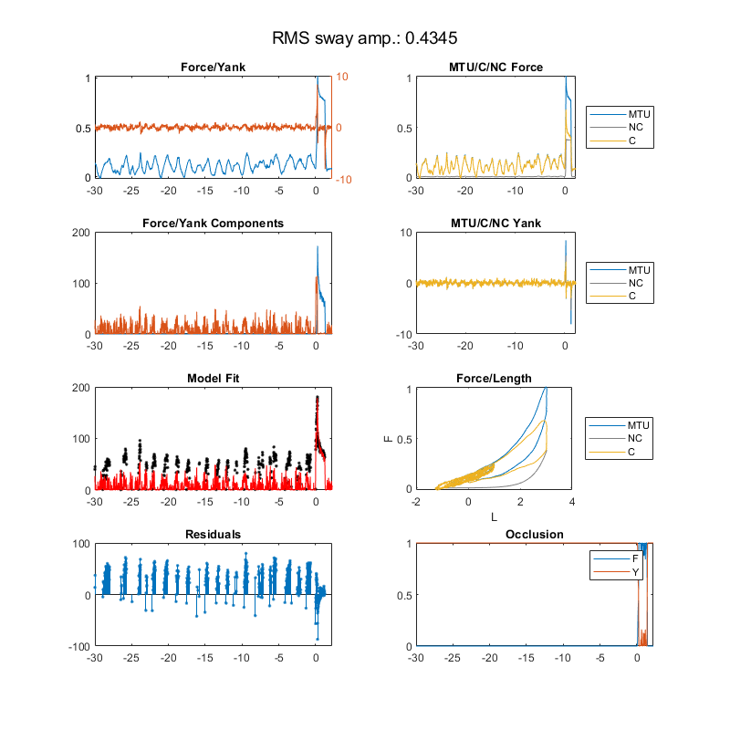 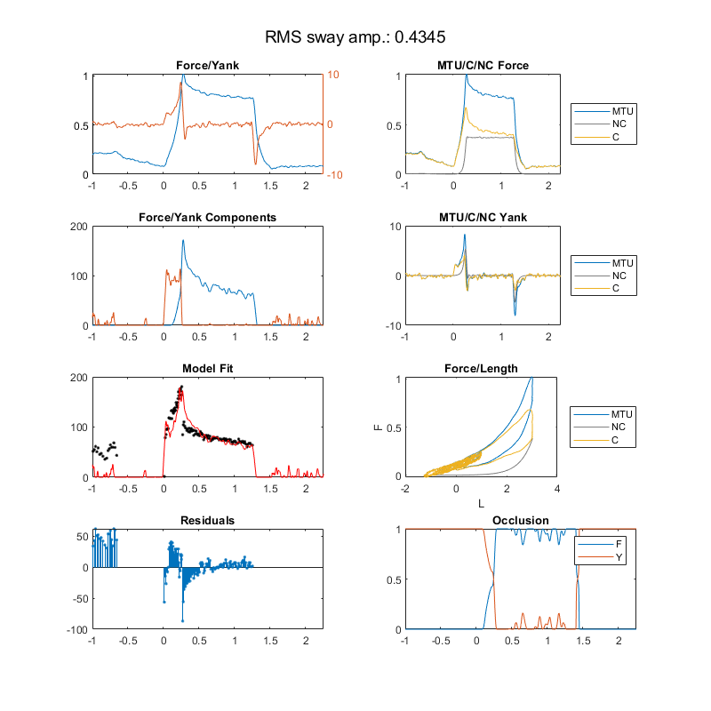 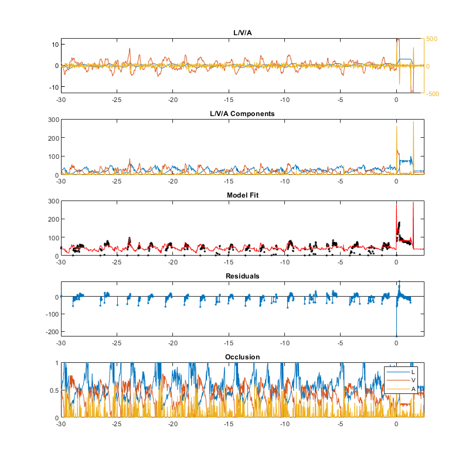 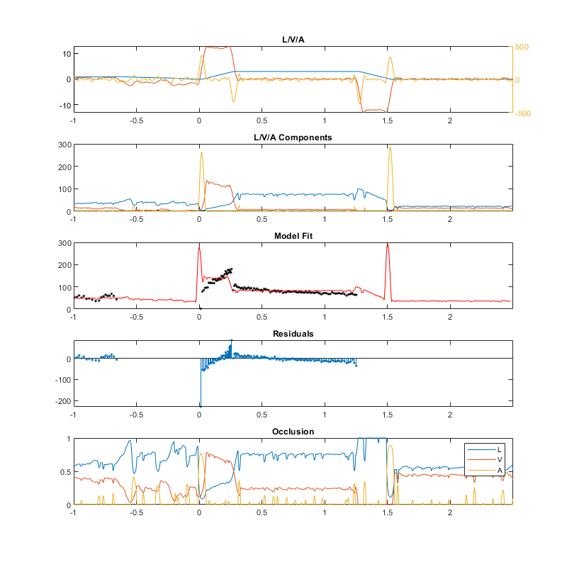

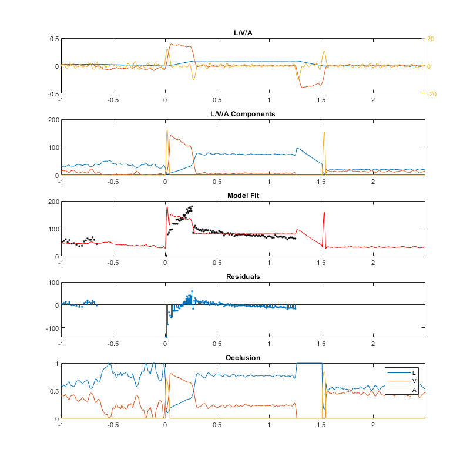 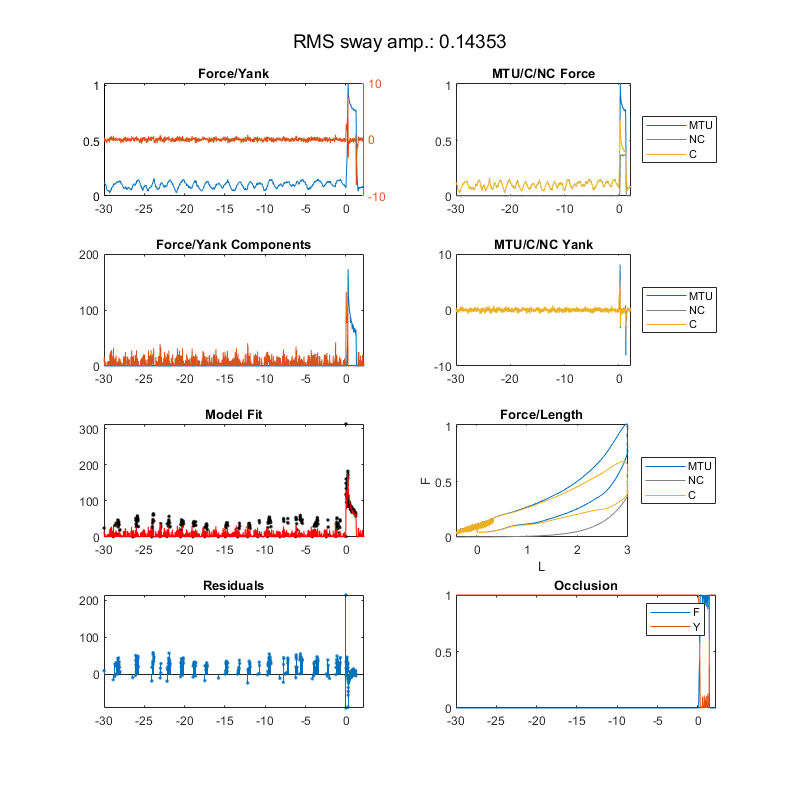 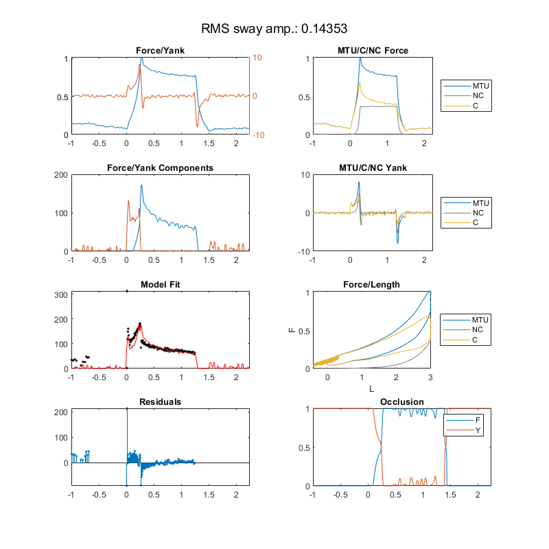 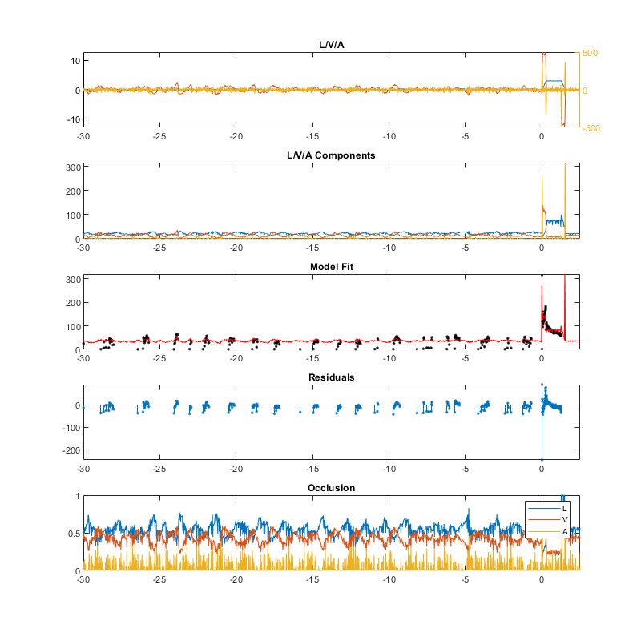 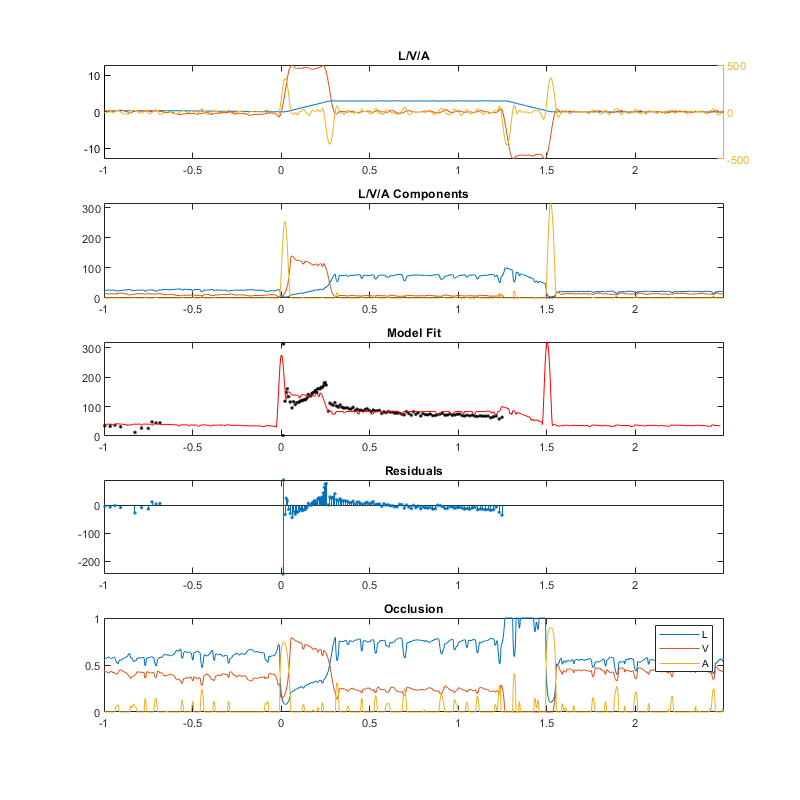 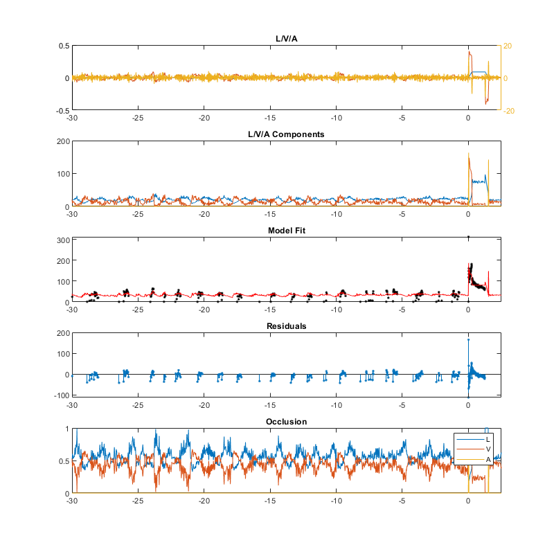